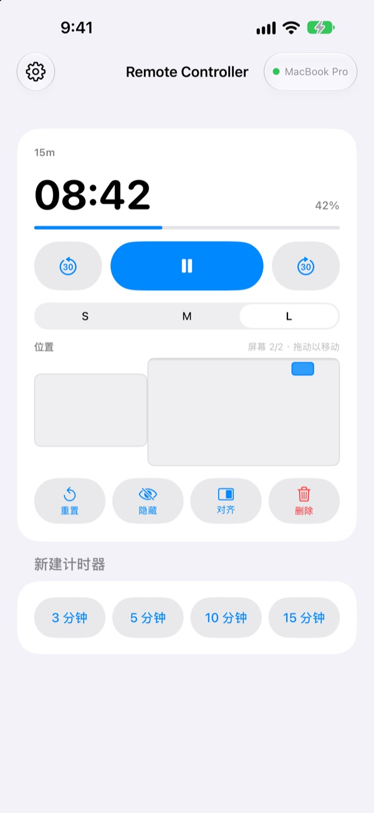
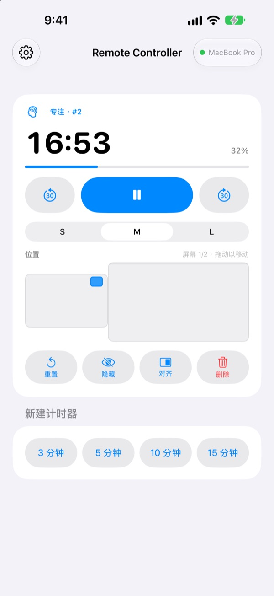
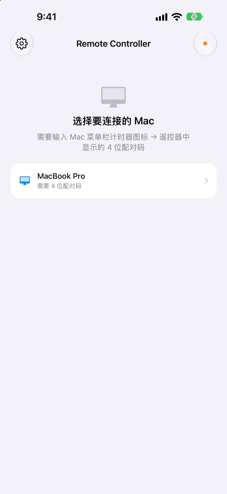

人离开 Mac
计时器还在手里
在 iPhone 上操控 Mac 里 StickyPresenter 的计时器。走到台前，照样能看剩余时间、暂停、加 30 秒，或把挡住图表的计时器挪到一边。
免费 · iOS 17 或更高版本 · 需要同一 Wi‑Fi 下一台正在运行 StickyPresenter 的 Mac。

还在为了碰一下计时器走回电脑前？
讲得超时，想再多要点时间；计时器偏偏压在最关键的那张图表上。以前只能当着观众穿过讲台，伸手去摸触控板。有了 Remote Controller，你站在原地，在 iPhone 上点一下就行。
看着剩余时间，当场调整
剩余时间和进度每秒刷新。用番茄钟时，还能看到现在是专注还是休息、进行到第几轮。
讲长了就加 30 秒，提前讲完就减 30 秒。3、5、10、15 分钟的新计时器点一下就开始；小组件可在 S、M、L 之间切换，坐在后排也看得清。

配对码只需输入一次
打开 App，同一 Wi‑Fi 下正在运行 StickyPresenter 的 Mac 都会出现在列表里。选中你的 Mac，输入 Mac 菜单栏计时器图标 ▸ 遥控器中显示的四位配对码即可。
之后每次打开 App，都会自动连上这台 Mac。无需账户，也没有服务器，两台设备在本地网络中直接通信。

三步即可上手
- 1
在 Mac 上打开 StickyPresenter
菜单栏出现计时器图标就准备好了。即使关掉所有窗口，App 也会留在菜单栏里。
- 2
在同一 Wi‑Fi 下打开 App
询问是否允许访问本地网络时，请点按“允许”，这样才能找到你的 Mac。
- 3
选择 Mac 并输入配对码
输入 Mac 菜单栏计时器图标 ▸ 遥控器中显示的四位配对码，就能开始操控。
在 iPhone 上能做什么
- 剩余时间
- 剩余时间、进度、番茄钟的专注或休息以及轮次，每秒刷新
- 开始 · 暂停
- 中间一个大按钮搞定
- 减 30 秒 · 加 30 秒
- 两侧按钮即时调整正在运行的计时器
- 新建计时器
- 3、5、10 或 15 分钟
- 大小
- 小组件 S、M、L 三档
- 位置
- 在缩小的 Mac 屏幕布局上拖动，接了扩展显示器还能拖到另一块屏幕
- 隐藏
- 暂时不让观众看到小组件
- 对齐
- 把找不到的小组件叫回计时器窗口旁边
- 重置 · 删除
- 让计时器从头开始，或删除它
- 快捷指令 · Siri
- 说
用 Remote Controller 开始计时，就能在 Mac 上启动计时器
遥控器只能操控 Mac 上正在运行的计时器。便签和提词器讲稿不会发送到 iPhone，也不能用来翻页。
常见问题
只用 iPhone App 可以吗？
不可以。Remote Controller 是 Mac 版 StickyPresenter 的遥控器，需要同一 Wi‑Fi 下的 Mac 正在运行 StickyPresenter。Mac 版 App 可以通过下方链接获取，也可以在 App 设置中的“获取 Mac 版 App”里获取。
列表里找不到我的 Mac。
超过 10 秒仍未找到 Mac 时，App 会显示检查清单。请从上到下逐项确认：Mac 上的 StickyPresenter 正在运行（菜单栏有计时器图标）；两台设备连接的是同一个 Wi‑Fi（访客网络不行）；已在 iPhone 的“设置”▸“隐私与安全性”▸“本地网络”中打开 Remote Controller；已在 Mac 的“系统设置”▸“隐私与安全性”▸“本地网络”中允许 StickyPresenter；VPN 已关闭。
提示配对码不正确。
请输入 Mac 菜单栏计时器图标 ▸ 遥控器中当前显示的四位数字。如果有人在 Mac 上点过“生成新配对码”，就只有新的配对码有效。
提示 Mac 已不再记得这台 iPhone。
在 Mac 上点过“忘记已配对的遥控器”，或重新安装了 StickyPresenter 后会出现这种情况。在列表中轻点该 Mac，重新输入一次配对码即可。
提示 Mac 没有响应。
请确认 Mac 没有进入睡眠、两台设备连接同一个 Wi‑Fi，并且已关闭 VPN。
提示“需要更新 Mac 版 App”。
Mac 上的 StickyPresenter 版本比遥控器旧。请在 Mac App Store 中更新，然后在列表中重新选择这台 Mac。
会议室里有很多台 Mac，安全吗？
安全。遥控器只连接已配对的那一台 Mac，不知道配对码的遥控器连不上你的 Mac。所有内容都通过同一网络内的加密直连传输。如果配对码曾被别人看到，请在 Mac 上点“生成新配对码”。
有哪些数据会通过互联网发送？
计时器和操作指令不会离开你的本地网络。通过互联网发送的只有匿名使用统计、崩溃报告和你主动发送的反馈。详情请见隐私政策。
上台前能用 Siri 启动计时器吗？
可以。对 Siri 说“用 Remote Controller 开始计时”，或在快捷指令中使用“在 Mac 上开始计时”操作。App 会打开，并在连上 Mac 后立即开始你设定时长（1 到 600 分钟）的计时。
有疑问、遇到故障或想提建议，请发邮件到 mizzking75@gmail.com。也可以在 App 左上角的齿轮 ▸ 发送反馈中，直接从 iPhone 发给我们。